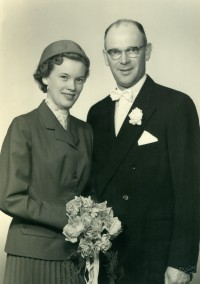
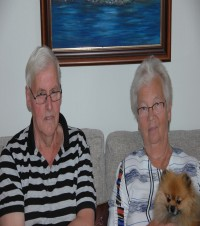

Olea Hansdatter
K, #276, f. 1864
| Datter | Anne Rudi+ (f. 10 februar 1894, d. 2 mai 1973) |
Biografi
Olea Hansdatter ble født i 1864. Hun giftet seg med
Syver Rudi. Hun døde på/i Reinli, Sør-Aurdal, Oppland.
| Sist redigert |
23 januar 2016 00:00:00 |
Fredrik Oskar Wilhelm Oliversen Valan
M, #277, f. 11 mars 1899, d. 28 februar 1974
Foreldre
Biografi
Fredrik Oskar Wilhelm Oliversen Valan ble født den 11 mars 1899 på/i Nærøy, Nord-Trøndelag. Han giftet seg med
Gudrun Hansen den 17 februar 1928 på/i Kolvereid kirke, Nærøy, Nord-Trøndelag. Han døde den 28 februar 1974 på/i Nærøy, Nord-Trøndelag. Han ble gravlagt den 8 mars 1974 på/i Kolvereid kirkegård, Nærøy, Nord-Trøndelag.
Fredrik Oskar Wilhelm Oliversen Valan ble døpt den 30 juli 1899 på/i Nærøy, Nord-Trøndelag. Han ble konfirmert den 19 juli 1914 på/i Lundring kirke, Nærøy, Nord-Trøndelag
+. Han kjøpte den 15 september 1928 Strandhaugen 20/4, Strand; Kolvereid, Nærøy, Nord-Trøndelag, for 5.000 kroner - 2.000 for løsøre + kår til svigerforeldrene Jonette og Nils Hansen.

Han solgte den 6 februar 1960 på/i Strandhaugen 20/4, Strand; Kolvereid, Nærøy, Nord-Trøndelag, til Arne Holmvik for 13.000 kroner + kår til en årlig verdi på 1.200 kroner. Etter at Kolvereid ble slått sammen med Nærøy, fikk eiendommen betengnelsen gnr. 57, bnr. 4.
| Sist redigert |
18 august 2024 17:12:06 |
| Slektskap | 7-menning 1 gang forskjøvet til Håkon Wahl |
Kåre Olav Valan
M, #278, f. 29 august 1928, d. 5 juni 1992
Foreldre
Familie: Margit Wahl (f. 10 august 1930, d. 16 januar 2020)
| Sønn | Ola Valan (f. 23 juni 1960, d. 21 oktober 2019) |
Biografi
Kåre Olav Valan ble født den 29 august 1928 på/i Kolvereid, Nærøy, Nord-Trøndelag. Han giftet seg med
Margit Wahl den 2 juli 1955 på/i Lundring kirke, Nærøy, Nord-Trøndelag
+.
Han døde den 5 juni 1992 på/i Nærøy, Nord-Trøndelag. Han ble gravlagt den 12 juni 1992 på/i Lundring kirkegård, Nærøy, Nord-Trøndelag.
Kåre Olav Valan eide mellom 1955 og 1958 Strandhaugen 20/4, Strand; Kolvereid, Nærøy, Nord-Trøndelag, - dette var farsgården. Han og
Margit Wahl kjøpte omtrent 1960 på/i Strandval, Lauga, Nærøy, Nord-Trøndelag. og bygde hus på tomta.
| Sist redigert |
14 april 2025 21:30:54 |
| Slektskap | Søskenbarn 1 gang forskjøvet til Håkon Wahl |
Nils Joar Valan
M, #279, f. 17 februar 1931, d. 22 mai 1983
Foreldre
Biografi
Nils Joar Valan ble født den 17 februar 1931 på/i Nærøy, Nord-Trøndelag. Han giftet seg med
Gerd Korsnes.
Han og
Gerd Korsnes ble skilt. Han døde den 22 mai 1983 på/i Moss, Østfold. Han ble gravlagt den 27 juni 1983 på/i Vestre Fredrikstad kirkegård, Fredrikstad, Østfold.
| Sist redigert |
9 mars 2025 14:24:09 |
| Slektskap | Søskenbarn 1 gang forskjøvet til Håkon Wahl |
Arne Valan
M, #280, f. 18 februar 1933, d. 22 juni 1988
Foreldre
Biografi
Arne Valan ble født den 18 februar 1933 på/i Nærøy, Nord-Trøndelag. Han giftet seg med Birgit Aakvik. Han døde den 22 juni 1988 på/i Nærøy, Nord-Trøndelag. Han ble gravlagt på/i Kolvereid kirke, Nærøy, Nord-Trøndelag.
| Sist redigert |
18 august 2024 17:14:00 |
| Slektskap | Søskenbarn 1 gang forskjøvet til Håkon Wahl |
Aase Walan
K, #281, f. 27 februar 1934, d. 10 oktober 1995
Foreldre
Familie: Hermod Thomassen (f. 10 september 1922, d. 26 juli 1980)
| Sønn | Åge Hermod Thomassen+ |
| Datter | Laila Anita Thomassen+ |

Åse Hermod Thomassen
Biografi
Aase Walan ble født den 27 februar 1934 på/i Nærøy, Nord-Trøndelag. Hun giftet seg med
Hermod Thomassen den 7 september 1957. Hun døde den 10 oktober 1995 på/i Namsos, Nord-Trøndelag. Hun ble gravlagt den 17 oktober 1995 på/i Namsos kirkegård, Namsos, Nord-Trøndelag.
Aase Walan was also known as Aase Thomassen.
| Sist redigert |
11 november 2025 23:51:36 |
| Slektskap | Søskenbarn 1 gang forskjøvet til Håkon Wahl |
Frøydis Gudrun Valan
K, #282, f. 5 mai 1936, d. 19 desember 2010
Foreldre
Familie: Tore Trulsen (f. 10 juli 1938, d. 10 november 2019)
Biografi
Frøydis Gudrun Valan ble født den 5 mai 1936 på/i Nærøy, Nord-Trøndelag. Hun giftet seg med
Tore Trulsen. Hun døde den 19 desember 2010 på/i Solbergelva, Nedre Eiker, Buskerud.
Frøydis Gudrun Valan was also known as Frøydis Gudrun Trulsen. Hun bodde på/i Krokstadelva, Nedre Eiker, Buskerud.
| Sist redigert |
18 august 2024 17:15:31 |
| Slektskap | Søskenbarn 1 gang forskjøvet til Håkon Wahl |
Inger Valan
K, #283, f. 24 august 1937, d. 2 juni 2024
Foreldre
Familie: Oddvar Ramfjord
| Sønn | Morten Ramfjord |
| Sønn | Otto Fredrik Ramfjord+ |
| Datter | Lisa Ramfjord+ |

Oddvar og Inger Ramfjord
Biografi
Inger Valan ble født den 24 august 1937 på/i Kolvereid, Nærøy, Nord-Trøndelag. Hun giftet seg med Oddvar Ramfjord den 16 juli 1960 på/i Lundring kirke, Nærøy, Nord-Trøndelag
+.
Hun døde den 2 juni 2024 på/i Nærøy bo- og behandlingssenter, Kolvereid, Nærøysund, Trøndelag. Hun ble gravlagt den 14 juni 2024 på/i Lundring kirkegård, Nærøysund, Trøndelag.
Inger Valan was also known as Inger Ramfjord. Hun kjøpte Sagtun, Ottersøy, Nærøy, Nord-Trøndelag.
| Sist redigert |
18 august 2024 17:16:02 |
| Slektskap | Søskenbarn 1 gang forskjøvet til Håkon Wahl |
Margit Wahl
K, #284, f. 10 august 1930, d. 16 januar 2020
Foreldre
Biografi
Margit Wahl ble født den 10 august 1930 på/i Nærøy, Nord-Trøndelag. Hun giftet seg med
Kåre Olav Valan den 2 juli 1955 på/i Lundring kirke, Nærøy, Nord-Trøndelag
+.
Hun døde den 16 januar 2020 på/i Nærøy bo- og behandlingssenter, Kolvereid, Nærøysund, Trøndelag. Hun ble gravlagt den 24 januar 2020 på/i Lundring kirkegård, Nærøysund, Trøndelag.
Margit Wahl was also known as Margit Valan. Hun var utdannet mellom 1949 og 1950 på/i Grong folkehøyskole. Hun og
Kåre Olav Valan kjøpte omtrent 1960 Strandval, Lauga, Nærøy, Nord-Trøndelag, og bygde hus på tomta.
| Sist redigert |
14 april 2025 21:29:37 |
| Slektskap | Søskenbarn 1 gang forskjøvet til Håkon Wahl |
Ola Valan
M, #285, f. 23 juni 1960, d. 21 oktober 2019
Foreldre
Biografi
Ola Valan ble født den 23 juni 1960 på/i Nærøy, Nord-Trøndelag. Han døde den 21 oktober 2019.
Ola Valan bodde på/i Åsen, Levanger, Nord-Trøndelag. Han ble bisatt den 31 oktober 2019 Åsen kirke, Levanger, Nord-Trøndelag. Ola sin urne ble lagt i kisten til sin mor ved begravelsen hennes.
| Sist redigert |
16 august 2024 21:50:20 |
| Slektskap | 3-menning til Håkon Wahl |
Jens Nilsen
M, #288, f. 1762, d. 20 desember 1824
Foreldre
Biografi
Jens Nilsen ble født i 1762 på/i Årset, Leka, Nord-Trøndelag. Han giftet seg med
Boletta Fordelsdatter den 26 desember 1794. Han døde den 20 desember 1824 på/i Leka, Nord-Trøndelag.
| Sist redigert |
3 mai 2010 00:00:00 |
| Slektskap | 3-menning 5 ganger forskjøvet til Håkon Wahl |
Hermod Thomassen
M, #289, f. 10 september 1922, d. 26 juli 1980
Foreldre
Familie: Aase Walan (f. 27 februar 1934, d. 10 oktober 1995)
| Sønn | Åge Hermod Thomassen+ |
| Datter | Laila Anita Thomassen+ |

Åse Hermod Thomassen
Biografi
Hermod Thomassen ble født den 10 september 1922 på/i Namsos, Nord-Trøndelag. Han giftet seg med
Aase Walan den 7 september 1957. Han døde den 26 juli 1980 på/i Namsos, Nord-Trøndelag. Han ble gravlagt den 1 august 1980 på/i Namsos kirkegård, Namsos, Nord-Trøndelag.
| Sist redigert |
18 august 2024 17:55:56 |
Tore Trulsen
M, #292, f. 10 juli 1938, d. 10 november 2019
Biografi
Tore Trulsen ble født den 10 juli 1938 på/i Nedre Eiker, Buskerud. Han giftet seg med
Frøydis Gudrun Valan. Han døde den 10 november 2019 på/i Nedre Eiker, Buskerud. Han ble gravlagt den 11 desember 2019 på/i Nedre Eiker kirkegård, Nedre Eiker, Buskerud.
| Sist redigert |
18 august 2024 17:22:42 |
Otto Martin Ramfjord
M, #297, f. 21 januar 1888, d. 22 mai 1962
Foreldre
| Datter | Kirsten Annie Ramfjord+ |
| Sønn | Oddvar Ramfjord+ |
Biografi
Otto Martin Ramfjord ble født den 21 januar 1888 på/i Ramfjord; Kolvereid, Nærøy, Nord-Trøndelag. Han giftet seg med
Ida Johanna Georgsdatter Sjølstad den 1 januar 1913 på/i Foldereid, Foldereid, Nærøy, Nord-Trøndelag. Han giftet seg med
Ivara Johanna Kristiansen den 15 oktober 1932 på/i Lundring kirke, Nærøy, Nord-Trøndelag
+. Han døde den 22 mai 1962 på/i Nærøy, Nord-Trøndelag. Han ble gravlagt på/i Lundring kirke, Nærøy, Nord-Trøndelag
+.
Otto Martin Ramfjord ble døpt den 13 mai 1888 på/i Kolvereid kirke, Nærøy, Nord-Trøndelag. Han ble konfirmert den 6 juli 1902 på/i Kolvereid kirke, Nærøy, Nord-Trøndelag.
| Sist redigert |
5 januar 2016 00:00:00 |
| Slektskap | 7-menning 1 gang forskjøvet til Håkon Wahl |
Ivara Johanna Kristiansen
K, #298, f. 13 juni 1896, d. 8 februar 1991
Foreldre
Familie: Otto Martin Ramfjord (f. 21 januar 1888, d. 22 mai 1962)
| Datter | Kirsten Annie Ramfjord+ |
| Sønn | Oddvar Ramfjord+ |
Biografi
Ivara Johanna Kristiansen ble født den 13 juni 1896 på/i Flosand, Lundring, Nærøy, Nord-Trøndelag. Hun giftet seg med
Otto Martin Ramfjord den 15 oktober 1932 på/i Lundring kirke, Nærøy, Nord-Trøndelag
+. Hun døde den 8 februar 1991 på/i Kolvereid sykeheim, Nærøy, Nord-Trøndelag. Hun bodde hos Kirsten og Steinar til det siste. Hun ble gravlagt den 15 februar 1991 på/i Lundring kirkegård, Nærøy, Nord-Trøndelag.
Ivara Johanna Kristiansen was also known as Ivara Johanna Ramfjord. Hun ble døpt den 2 august 1896 på/i Lundring kirke, Nærøy, Nord-Trøndelag
+. Hun ble konfirmert den 16 juli 1911 på/i Lundring kirke, Nærøy, Nord-Trøndelag
+.
| Sist redigert |
28 august 2022 15:04:38 |
Haldor Ingvanel Melum Iversen Wahl
M, #299, f. 10 september 1867, d. 3 februar 1961
Foreldre
Biografi
Haldor Ingvanel Melum Iversen Wahl ble født den 10 september 1867 på/i Storval, Nærøy, Nord-Trøndelag. Han giftet seg med
Anna Mathilde Johansdatter Storval den 4 juni 1891 på/i Nærøy, Nord-Trøndelag. Han giftet seg med
Anna Kathrine Olsdatter Haugfles den 23 oktober 1903 på/i Kolvereid kirke, Nærøy, Nord-Trøndelag. Han døde den 3 februar 1961 på/i Nærøy, Nord-Trøndelag. Han ble gravlagt den 10 februar 1961 på/i Lundring kirkegård, Nærøy, Nord-Trøndelag.
Haldor Ingvanel Melum Iversen Wahl was also known as Haldor Ingvard Melum Haldorsen. Han ble døpt den 26 desember 1867 på/i Nærøy, Nord-Trøndelag. Av koppeattesten fremgår bosted Flatholmen gnr 28, bnr 2, Lilleval, Nærøy, Nord-Trøndelag. Han ble konfirmert den 26 juli 1885 på/i Nærøy, Nord-Trøndelag. Han emigrerte til Canton, South Dakota, USA, den 20 mars 1901.
| Sist redigert |
14 april 2025 21:32:05 |
| Slektskap | Oldefar til Håkon Wahl |
Anna Mathilde Johansdatter Storval
K, #300, f. 5 desember 1870, d. 13 februar 1903
Foreldre
Biografi
Anna Mathilde Johansdatter Storval ble født den 5 desember 1870 på/i Nærøy, Nord-Trøndelag. Hun giftet seg med
Haldor Ingvanel Melum Iversen Wahl den 4 juni 1891 på/i Nærøy, Nord-Trøndelag. Hun døde av tæring den 13 februar 1903 på/i Storval, Nærøy, Nord-Trøndelag. Hun ble gravlagt den 25 februar 1903 på/i Lundring kirkegård, Nærøy, Nord-Trøndelag.
Anna Mathilde Johansdatter Storval was also known as Anna Mathilde Wahl. Hun was also known as Mathilde Storval. Hun ble døpt den 23 april 1871 på/i Nærøy, Nord-Trøndelag. Hun ble konfirmert den 25 juli 1886 på/i Lundring kirke, Nærøy, Nord-Trøndelag
+. Hun ble jordfestet den 23 august 1903 Lundring kirkegård, Nærøy, Nord-Trøndelag.
| Sist redigert |
14 juli 2022 23:50:36 |
| Slektskap | Oldemor til Håkon Wahl |
{kind=link}
{kind=link}
{kind=link}